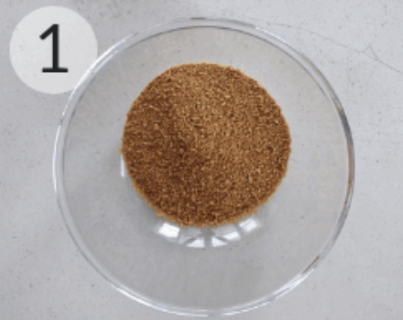
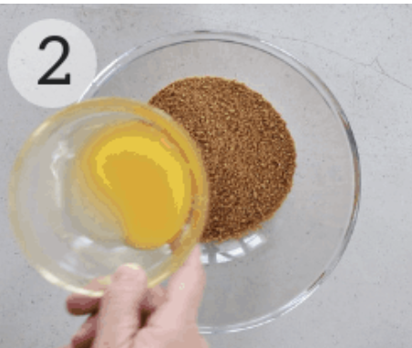
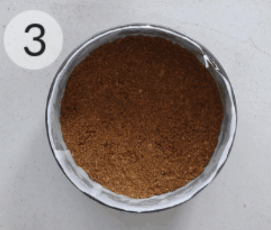
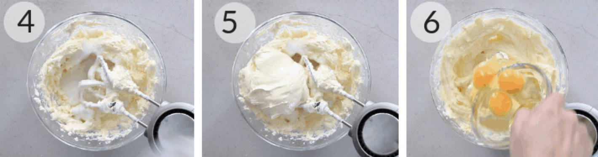
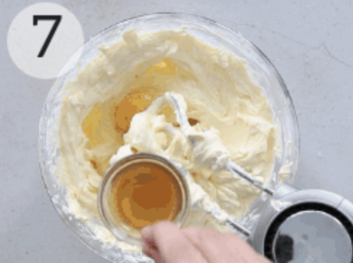

Description
Never mind the sour cream, farmer's cheese, cream cheese, water bath, and worrying about a sunken center. The filling for this delicious cheesecake has just four simple ingredients, and the cake bakes in a mere 30 minutes. Now that is easy!!
Instruction
- Select a pie pan whose inside top dimension is at least 9", and whose height is at least 1 1/4". Preheat the oven to 350°F. 
- Make the crust by stirring together all of the crust ingredients, mixing until thoroughly combined.
- Press the crumbs into the bottom and up the sides of the pie pan, making a thicker layer on the bottom than on the sides.  
- Make the filling by mixing together the room-temperature cream cheese and sugar until smooth. Mix in the eggs and vanilla, again mixing until smooth. To avoid beating too much air into the batter, use a mixer set at low-medium speed. To avoid lumps, make sure the cream cheese is softened, and/or at room temperature.
- Set the pie pan onto a baking sheet, if desired; this makes it easier to transport in and out of the oven, and also protects the bottom of the crust from any potential scorching. Pour the filling into the crust.
- Place the cheesecake in the oven. Bake it for 20 minutes, then add a crust shield; or shield the crust with strips of aluminum foil. Bake for an additional 10 minutes (for a total of about 30 minutes). A digital thermometer inserted into the filling 1" from the edge should read between 165°F and 170°F; the filling won't look entirely set in the center. 
- Remove the cheesecake from the oven, and set it on a rack to cool. Once the cake is cool, refrigerate it, covered, until you're ready to serve it.
- Serve the ricotta with your favorite things 
- Final cheesecake is that